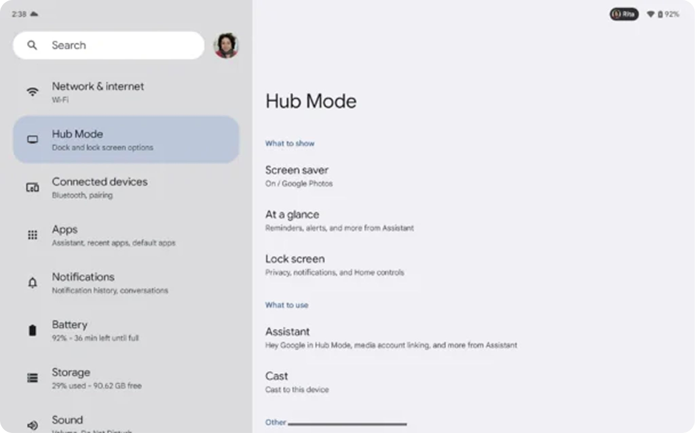
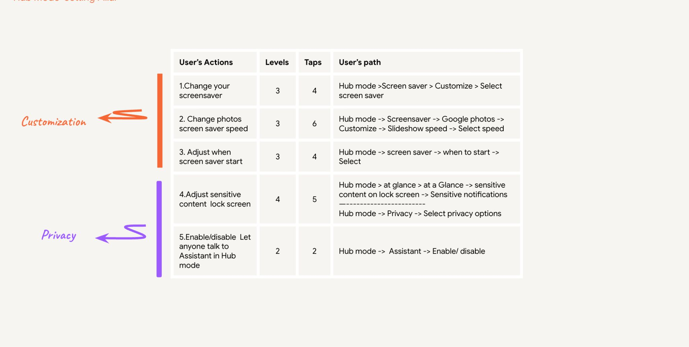
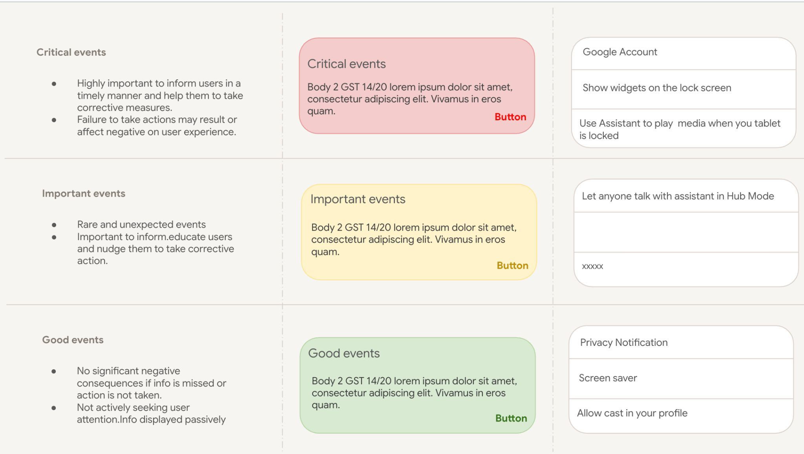

On the Google Pixel Tablet team, I improved how people discover and configure system capabilities — flattening a settings hierarchy of 300+ pages into a far more discoverable experience.

Overview
As Google invested in feature adoption for the Pixel Tablet, discoverability of system settings became a real barrier. I contributed across initiatives — from early exploration to validation through UX research — to make capabilities easier to find and configure.
Interaction Designer — Assistant Experience
Google · Pixel Tablet
Exploration → design → UX research validation
25% ↓ time on task · 20% ↑ task success
Before & after
Customizing the device meant digging 3–6 levels deep through a sprawling settings tree. The redesign brings a clearer two-pane structure and surfaces the actions people actually reach for.
300+ pages, deeply nested. Discoverability dropped sharply with depth; decentralized ownership made the experience feel fragmented.
Flatter, surfaced, consistent. A two-pane layout reduces depth and brings key device capabilities — Hub Mode, screen saver, lock screen — to the surface.
The problem
Complex nesting caused users to abandon customization tasks — and adoption suffered.
The settings hierarchy had grown to more than three hundred pages, making the right control hard to locate.
Key actions sat 3–6 levels deep, so discoverability fell off the further users went.
Decentralized ownership across product teams created an inconsistent, stitched-together experience.
Research
I partnered with UX Research to synthesize existing studies on settings navigation and behavior, identify pain points and mental models, run secondary research comparing iOS and Android patterns, and audit the current hierarchy and navigation depth.

The insight
Discoverability dropped significantly as users moved deeper into the hierarchy. The opportunity wasn't more menus — it was less depth, with key actions surfaced where people look first.
Design
Beyond flattening navigation, I designed a notification-severity framework for a share-notification system — so the device communicates the right urgency without crying wolf.

The share-notification system went from concept and user research to a comprehensive PRD with senior stakeholder buy-in — designed in close collaboration with Developer, Marketing, Operations, and Product.
Outcome
Beyond the metrics, the work improved discoverability of key device capabilities and established governance that helped multiple teams design settings consistently — setting up the design-system effort that followed.